包含登录认证、大盘导航、预算Tab切换、已有策略完整账务呈现、编辑策略及百分比重算、删除策略二次确认、EmptyState空态恢复、新建策略输入守卫及项目作用域锁定、Chat模块契约防爆全流程。
http://127.0.0.1:24824/#/login。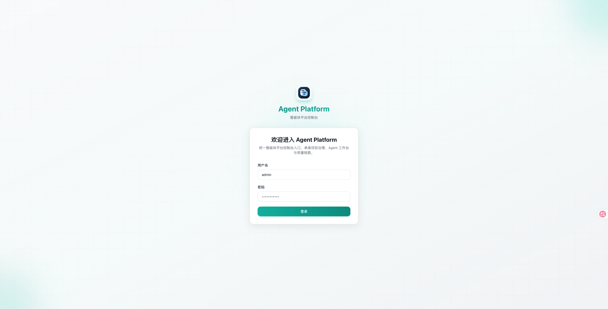
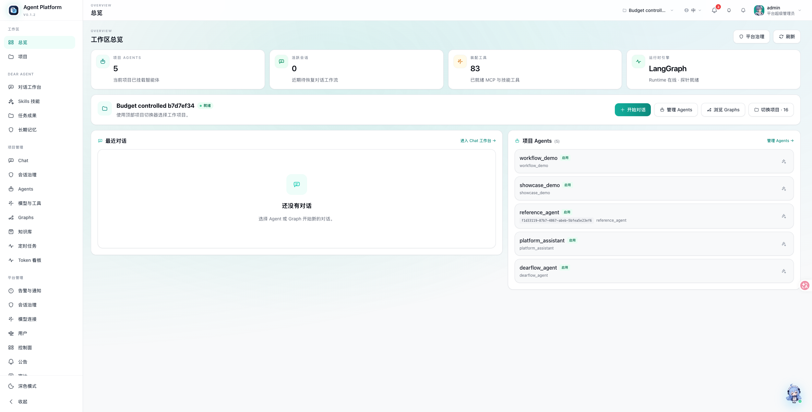
?tab=budgets，同时激活对应 Panel。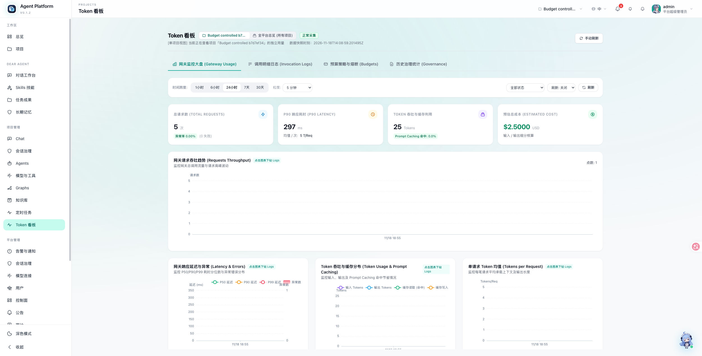
PROJECT 且截断显示项目 ID 前 8 位。起: 11/18 08:00 止: 11/19 08:00。25.0% 并渲染绿色健康条。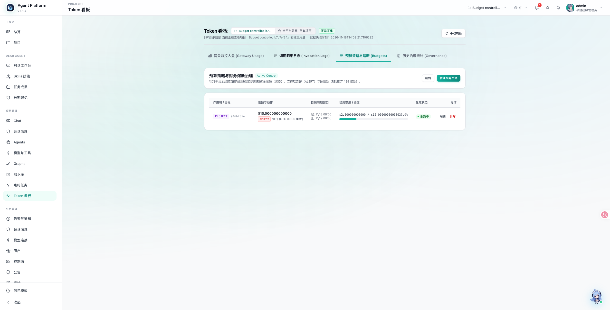
CreateBudgetPolicyModal 编辑态。50.00，将超额动作切换为 ALERT (软告警通知)。PUT /api/policies/budgets/:id。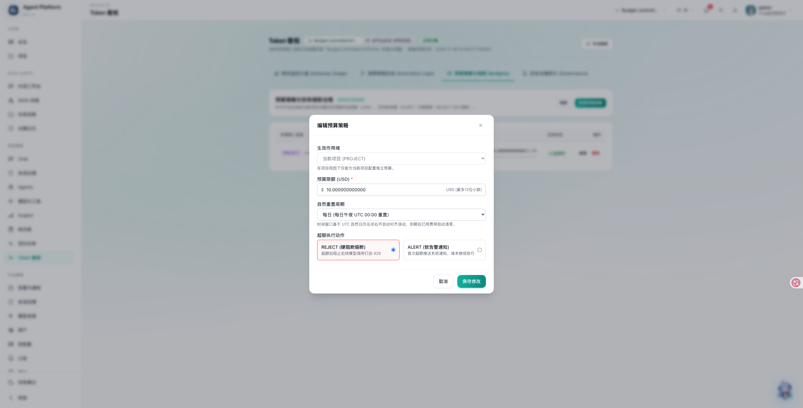
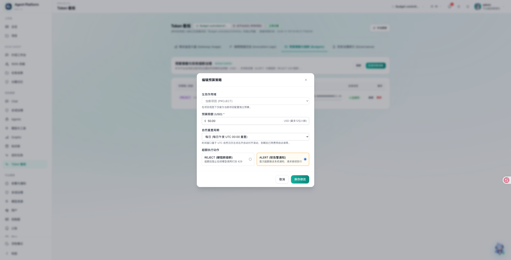
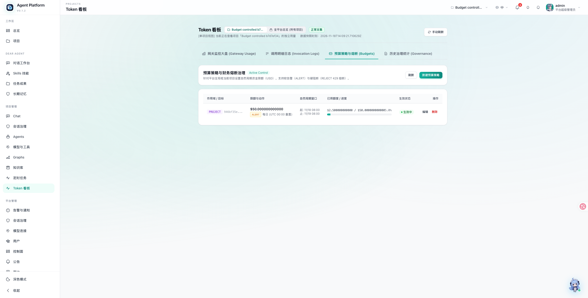
DELETE /api/policies/budgets/:id。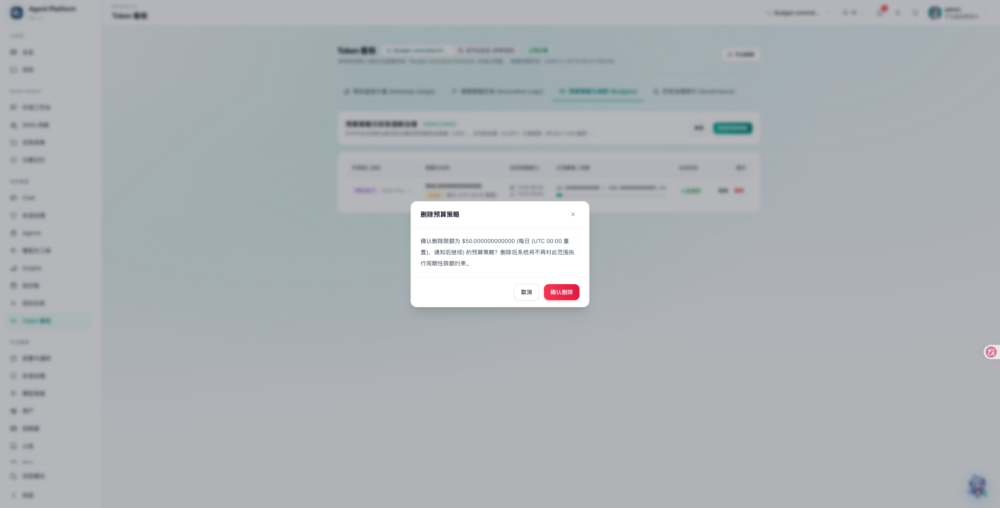
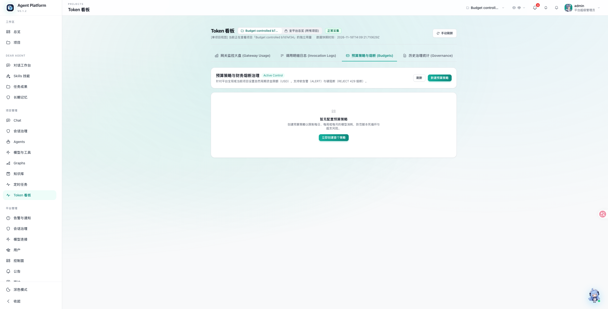
100.00（正则守卫限制纯数字与单一小数点，最大 12 位小数）。每月 (自然月 1 日 UTC 00:00 重置)，动作保持 REJECT。POST /api/policies/budgets。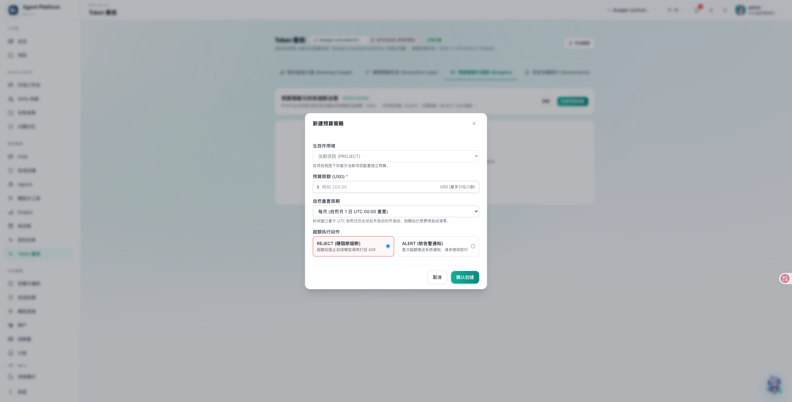
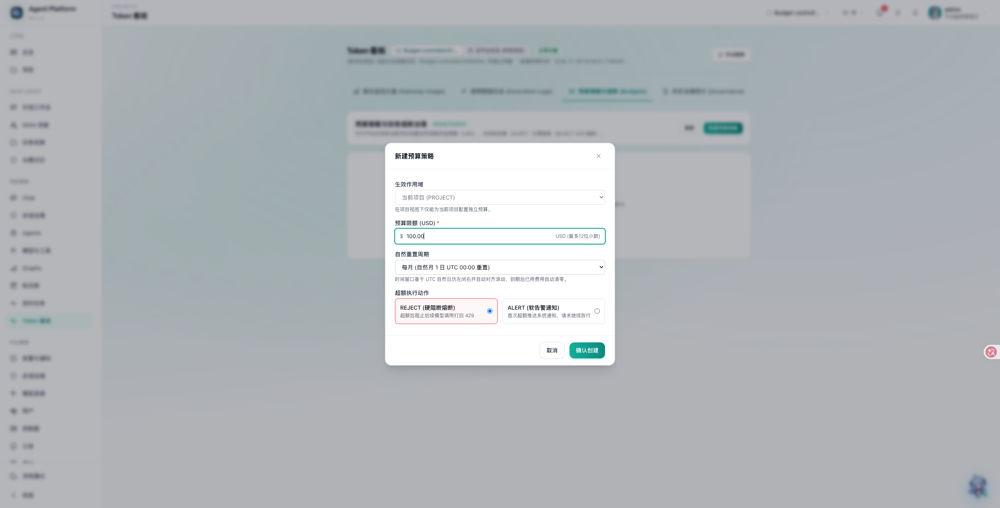
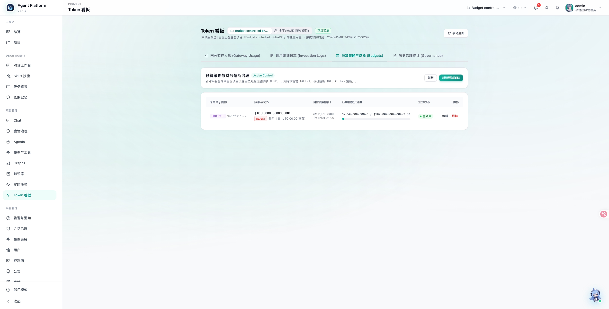
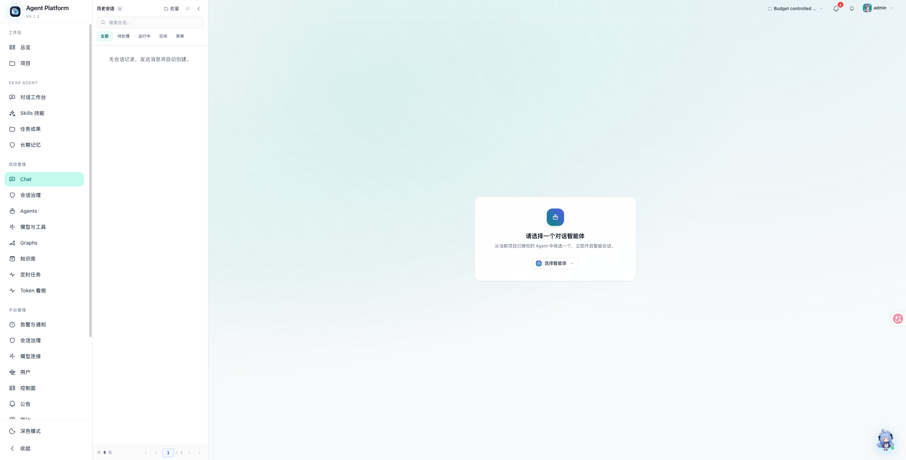